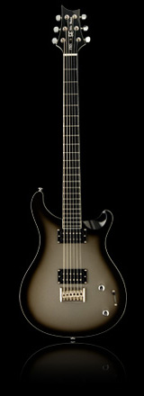

Mike Mushok, of the multi-platinum selling band Staind, joins the PRS family with this signature model SE. The SE Mike Mushok Model is the first production-model baritone guitar for us. Designed to Mike’s specs this guitar features a solid mahogany body and neck, an ebony fretboard and a 27.7" scale length. The Silverburst finish is offset by the white binding around the body and neck and the clean look of the blank ebony fretboard.